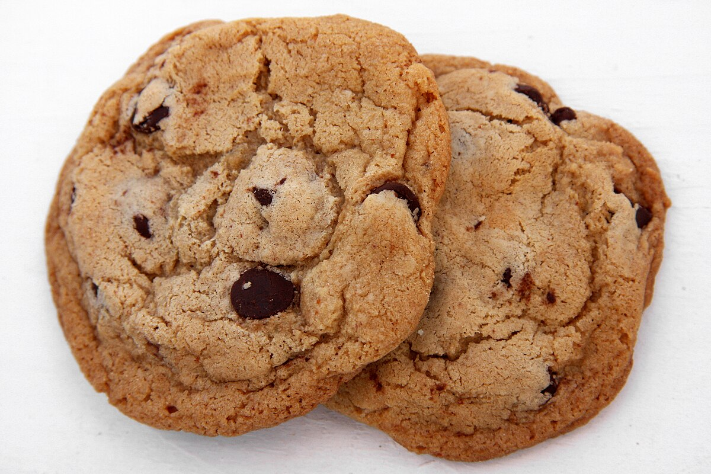

Classic Chocolate Chip Cookies
The Ultimate Homemade Treat
|  | |||||||||||||||||||||
About This RecipeThese classic chocolate chip cookies are the perfect combination of crispy edges and chewy centers. With rich butter flavor and generous chunks of chocolate, this recipe has been perfected over generations. Whether you're baking for a special occasion or just craving a sweet treat, these cookies will become your go-to recipe. They're easy to make and guaranteed to bring smiles to everyone who tries them! The secret lies in using room temperature butter and not overmixing the dough. Perfect for sharing with family and friends, or enjoying all by yourself with a glass of cold milk. |
|||||||||||||||||||||
Equipment Needed
|
Ingredients
|
||||||||||||||||||||
Cooking Instructions
|
|||||||||||||||||||||

|
|||||||||||||||||||||
Baking Tips:• Don't overmix the dough once you add the flour - this keeps cookies tender. |
|||||||||||||||||||||
|
| |||||||||||||||||||||